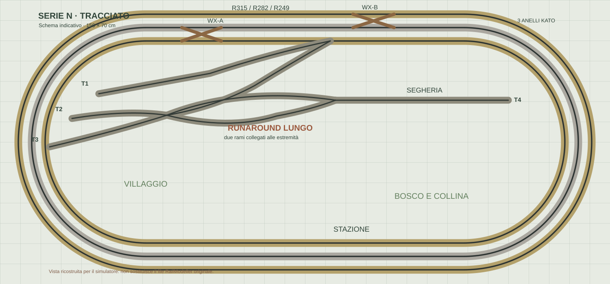

SerieN Autumn RailwaysIL NOSTRO PLASTICO · SCALA N · 150 × 70 CM
AUTUMN VALLEY · DB · EPOCA III/IV
Tre anelli. Un piccolo mondo.
Tre convogli, quattro tronchini, un lungo runaround.
Preparazione del mondo 3D…
Trascina per ruotare · Rotellina per zoom · Tocca uno scambio per azionarlo
3 ANELLI · R249 / R282 / R315Vista 3D · v0.3
CENTRALE Z21 · SIMULAZIONE
Cabina di guida
🚂
BR 055
Vapore · DB · Epoca IIIANELLO ESTERNO
VELOCITÀ0%
0255075100
COMPOSIZIONE3 carri
PIANO DI RIFERIMENTO
Pianta del tracciato simulato

Pianta e vista 3D usano la stessa geometria. Ricostruzione dal PDF Kato: le dimensioni dei singoli scambi richiedono ancora verifica di catalogo.
Come funziona SerieN
Vista 3D: trascina per ruotare il plastico; usa la rotellina per lo zoom; un clic seleziona il treno oppure cambia uno scambio.
Guida: seleziona una delle tre locomotive dalla barra orizzontale. Ogni treno ha velocità, direzione e luci autonome.
Scambi: i crossover WX310 scambiano anello nel tratto superiore; gli scambi merci includono i due estremi del lungo runaround, quattro tronchini e un accesso. I raccordi sono percorsi continui. Gli scambi vicini ai convogli sono bloccati.
Aggancio: ferma la locomotiva, sgancia un carro; accostati sullo stesso binario per riagganciarlo. Accelerazione e frenatura sono graduate; invertire la marcia mantiene l’ordine dei carri.
Importante: questa è una simulazione indipendente. Non trasmette comandi alla tua centralina Z21 reale.